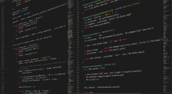

2.7.1.- JPQL (II)

Y ahora seguro que te estarás preguntando, ¿cómo ejecuto una consulta JPQL?
Si en el apartado anterior veíamos cómo eran las consultas JPQL, aquí vamos a responder justo a esa pregunta. Estas consultas son muy similares a los PreparedStatement de JDBC, verás qué fácil.
Vamos a empezar poniendo un ejemplo de consultas tipo UPDATE y DELETE, que en el fondo son bastante similares. Partimos de la consulta paramétrica que dejamos al final del apartado anterior. El primer paso, sería crear la consulta:
EntityManager em=...
Query q=em.createQuery("UPDATE Producto p SET p.precio=:precio where id=:id");
Crear una consulta es tan sencillo como usar el método createQuery. Después, el segundo paso sería establecer el valor de cada parámetro con el método setParameter. En el caso de la consulta que tenemos entre manos, el parámetro ":id" sería el id del producto a modificar y ":precio" sería el nuevo precio del producto. Veamos cómo se haría:
q.setParameter("precio", nuevoPrecio);
q.setParameter("id", idDelProductoAModificar);
Y el tercer paso sería ejecutar la consulta. Al ejecutar la consulta los parámetros serán sustituidos por los valores establecidos con el método setParameter. En el caso de las consultas tipo UPDATE y DELETE esta ejecución se hará con el método executeUpdate:
int result=q.executeUpdate();
El valor retornado por el método executeUpdate será el número de entidades actualizadas o eliminadas (dependiendo de la consulta realizada). Es importante tener en cuenta dicho valor para saber si la actualización o eliminación se han llevado a término.
em.getTransaction().begin();Y al terminar tenemos que cerrar la transacción:
em.getTransaction().commit();Cuando se trata de una consulta de tipo SELECT, la cosa cambia un poco. En primer lugar, debemos crear la consulta pero indicando la entidad que se espera en retorno:
TypedQuery<Producto> q=em.createQuery("SELECT p FROM Producto p WHERE p.precio>=:preciominimo",Producto.class);
Fíjate que ahora esta versión del método retorna una instancia de TypedQuery, donde se especifica el tipo de dicha clase (dado que es genérica): TypedQuery<Producto>. Aquí es importante indicar como segundo argumento del métoco createQuery la entidad que se espera retornar, en este caso Producto.class. El siguiente paso, es igual al anterior, establecer el valor de cada parámetro:
q.setParameter("preciominimo", 15);El tercer paso sería obtener la lista de resultados, donde literalmente obtenemos una lista del mismo tipo que hemos indicado antes (List<Producto>) con todas las entidades que coinciden con la condición especificada:
List<Producto> r=q.getResultList();SELECT las entidades rescatadas tendrán el estado de gestionadas.Ejercicio Resuelto
Te proponesmos ahora un pequeño reto. ¿Sabrías crear un método que rescatara todos los productos cuyo precio fuera igual o superior a uno dado?
Intenta hacer un método que tenga la siguiente cabecera:
private static List<Producto> obtenerProductosPrecioMinimo(EntityManager em, double preciominimo)Ejercicio Resuelto
Y por último te proponemos el siguiente reto, algo más complicado de lo habitual. ¿Serías capaz de crear un método para eliminar los tickets no cerrados con una antigüedad de 4 días o más?
La idea es crear un método que permita limpiar tickets antiguos no cerrados con la siguiente cabecera:
public static int borrarTicketsAntiguos (EntityManager em)El método debería retornar la cantidad de tickets borrados.